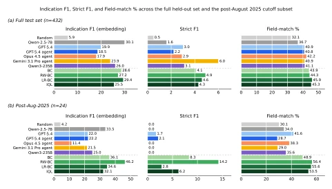

临床开发本质是不确定性下的序列决策，但现有 ML 工作多关注预定义试验是否成功或患者匹配 (Fu et al., 2022; Jin et al., 2024)，忽略了上游策略规划。赞助商需结合历史试验、监管信号、竞争态势等制定组合，但后果滞后且信息不完备。本文旨在解决“给定当前状态，下一步该 launch 哪些试验”的问题。现有 LLM Agent 虽能检索工具，但缺乏从历史决策轨迹中学习策略的能力，容易依赖预训练知识而非特定领域经验，难以应对时间切片后的新决策。此外，大多数工作未考虑决策的延迟后果，而本文通过离线奖励归因尝试捕捉长期影响。
实验在 8 个 held-out 评估集上进行，包括单药、赞助商、药物类别及时间切分，重点考察后 August 2025 的无污染集。基线包括 GPT-5.4、Claude Opus 4.5 等工具 Agent 及随机策略。指标含 Indication F1、Strict F1 等。结果显示，离线训练模型显著优于未微调基线，RW-BC 在严格 F1 上达 14.2%，远超 Agent 的 2.1%。自回归评估表明微调模型对误差更鲁棒。消融显示奖励加权比单纯模仿更能捕捉成功设计。尽管未来数据划分样本较小，但统计显著性支持了离线学习在策略规划上的有效性。此外，RW-BC 在成功试验设计上匹配率更高，证明了奖励信号的有效性。
—

Figure 1. Results are reported as windows-weighted means across the eight held-out evaluation splits. [a] is the union of all n=432 held-out windows, while [b] is the cross-split subset of n=24 windows whose decision date falls after August 2025, the most recent knowledge cutoff for the models evaluated here. BC, RW- BC, LR-BC, and IQL denote behavioral cloning, reward-weighted behavioral cloning, learned-reward behavioral cloning, and value- based implicit Q-learning.